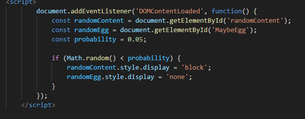
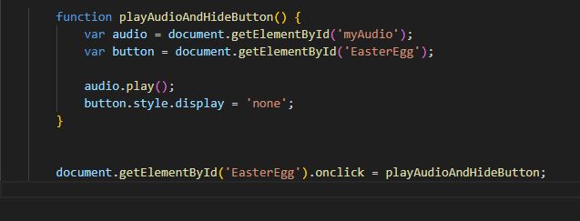

Credits
(Unofficial)Forsaken wiki for providing inspiration and images;
Forsaken for providing infomation,images and music;
Forsaken Comunity for providing LORE.
Creator
Pedro Henrique Brito
(2-(5%)) Easter eggs usando CSS ou JavaScript (mais pontos)/ "Alguns elementos com posicionamento não estático"

(3-10%)Criar algo interativo na página usando JavaScript.
